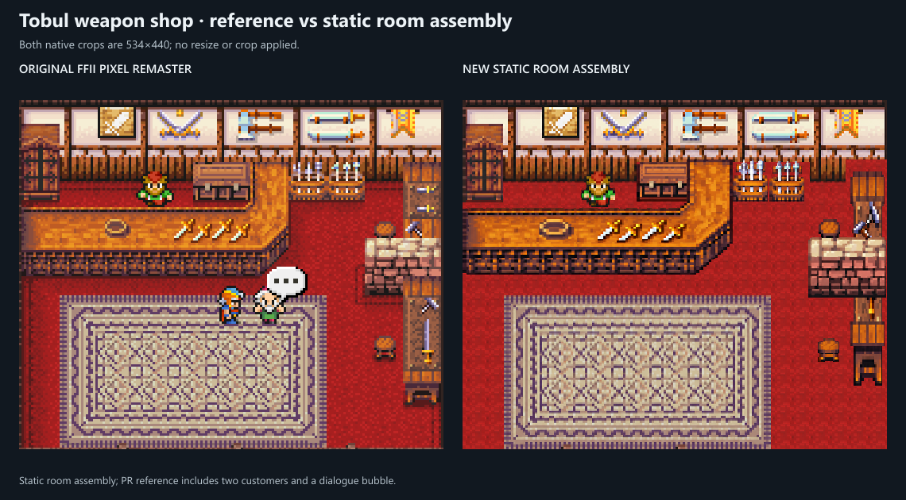
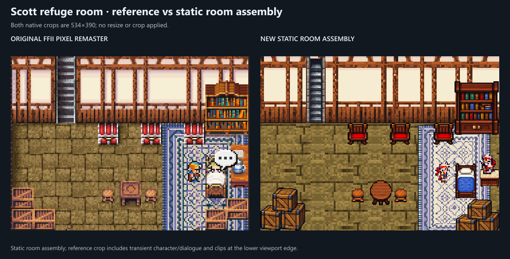
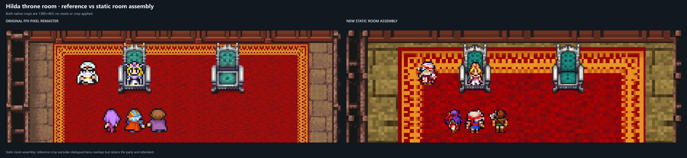

Tobul’s weapon shop
Stocked wall, red floor, patterned rug, merchant and independently placed counter, chest, racks, furnace, bench and stool. Visiting customers and dialogue are omitted from the static assembly.

Original FFII Pixel Remaster capture on the left; the new assembly of existing PNG components on the right. Each pair uses the same viewport and display scale. These previews test the reusable kit rather than redraw a complete room. Source files, placements, transformations and separate layers accompany each assembly.
Stocked wall, red floor, patterned rug, merchant and independently placed counter, chest, racks, furnace, bench and stool. Visiting customers and dialogue are omitted from the static assembly.

Stone floor, cream/timber walls, blue rug and furnished sleeping area. The comparison exposes differences in the existing furniture and rug patterns.

The reference’s dialogue panels obscure much of the room. Both views use the same unobstructed crop, retaining the red/gold carpet, wall base, thrones and characters.
